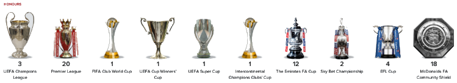
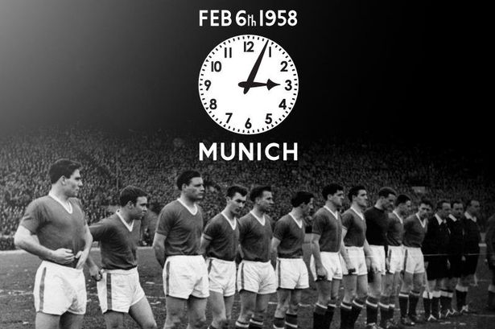

Klubben ble stiftet i 1878, under navnet Newton Heath LYR Football Club, og ble valgt inn i The Football League i 1892. I 1902 fikk klubben sitt nåværende navn.«The Red Devils», som er kallenavnet til Manchester United, har siden 1910 spilt hjemmekampene sine på Old Trafford i Manchester.
Manchester United har vunnet den engelske ligaen 20 ganger, som er rekord. De har vunnet FA-cupen 12 ganger, ligacupen fem ganger og de har også rekorden for vunnede FA Community Shield med 21 seire, inkludert delinger. Klubben har vunnet Mesterligaen tre ganger samt at de har vunnet Europaligaen, Cupvinnercupen, UEFA Super Cup, Intercontinental Cup og VM i fotball for klubblag en gang. I 1999 ble Manchester United den første engelske klubben som vant The Treble – Premier League, FA-cupen og Mesterligaen i samme sesong.
I 1958 krevde München-ulykken livet av åtte av spillerne i Manchester United. I 1968 ble klubben, under manager Matt Busbys ledelse, den første engelske fotballklubben til å vinne Serievinnercupen. Manageren fra november 1986 til juli 2013, Alex Ferguson, vant 38 titler med klubben. Klubben ble under Alex Fergusons managertid et av Englands mestvinnende fotballag. Manchester United er en av de rikeste og mest populære klubbene i verden.
 